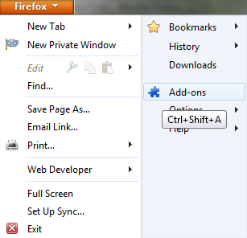
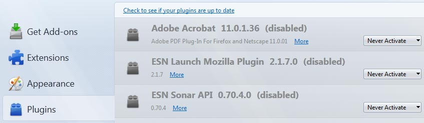

Client Installation Guide
There's the easy way and there's the normal way. If your chat partner who set up the server was nice enough, they might have done all the hard work for you and you can follow the easy method, otherwise just follow the normal process.
Easy setup
Your chat partner should have set up the following for you:
- Installed a copy of Firefox Portable on a USB drive and secured it
- Copied the client files and your one-time pads to a directory on the USB drive.
If these steps have been done then all you need to do is run the Firefox application and open the index.html which will open Jericho Comms inside the browser. From there you can load the one-time pads from the text file into the application and start chatting. The Usage guide has more information if you need it. Remember to erase the text file containing the one-time pads after you have loaded them into the program. The program will automatically erase the corresponding one-time pad after each message has been sent and received.
Normal setup
- Install prerequisite software first which is the latest version of Firefox, Chromium or Brave. One of these browsers are needed as most other browsers do not have native support for some of the HTML5 technologies this program uses. The other advantage is they are open source. Do not use the closed source Google Chrome, Opera or Internet Explorer. You cannot trusted closed source software in today's world given the recent NSA leaks.
- Take note of the steps listed for setting up a new browser profile and securing the profile.
- Download the files from one of the mirrors listed on the download page.
- Verify the file hashes and signature from the download page. It is absolutely critical to verify the downloaded file with one of the hashes or signatures. This is to prevent the NSA or other 3 letter agencies from modifying the source code which could weaken/break the encryption and then distributing those copies around the internet pretending to be the real thing. You can verify the hashes with standalone tools for Windows or basic Linux console commands.
-
Extract the files from the archive to your desired location. Windows users can use the free
7-Zip program for this. Linux users can run the following command
to extract the files to the current directory which you can then copy to wherever you want:
tar -xvf jericho-v1.5.4.tar.xz
Or alternatively use this to extract to a pre-existing directory of your choice:
tar -xvf jericho-v1.5.4.tar.xz -C /path/to/directory - Open the client directory then open index.html in your web browser (Firefox or Chromium). You can continue with the How to use guide from now on.
Extra precautions
- Ideally you should create a TrueCrypt container (using all 3 encryption algorithms) and extract the files directly into there first if you are intending on running the client locally on the machine. This slows down the process of recovering the pads from the hard drive by forensic analysis.
- Also a portable copy of Firefox or Chrome should be put inside the container and the client program run from inside there. This means that the SQLite database used by the browser which stores the one-time pads is always encrypted.
- Use a MicroSD, SD card or USB memory stick and put the Truecrypt volume containing the client files and portable browser on it. This means you can hide or destroy the memory/device easily in an emergency. It also means you can chat from any computer, so you could take it to work or other places.
Setup a new secure browser profile
In this step we will setup a new secure browser or browser profile purely for secure communications. This
is mainly because it's handy to have a separate profile so you don't accidentally erase your one-time pads
whenever you clear your browser history. It also keeps this profile and extensions separate so nothing
can maliciously copy your one-time pads. An extra layer of security would be to install the browser/browser
profile into an encrypted volume,
so it's encrypted on the storage device as well.
For portability you can download the latest version of Firefox Portable
from here and install it. If you want
to chat from multiple computers, install it onto a USB drive. There exists portable
versions of Chromium as well but
this guide will just cover Firefox for now.
Alternate method
If you just want to use your existing Firefox install you can follow these instructions to set up a new profile. The -no-remote option may come in handy when you want to run multiple separate Firefox profiles at the same time.
Securing your new Firefox profile
This section follows some steps to lock down your browser profile so it is as secure as possible and will only be used for chatting with this program.
Disabling default plugins in the browser
Now we will disable all the default browser plugins as they are not required and are a potential security hole.
Open the Firefox main menu then click on Add-ons

Then click on Plugins in the left side menu. For every plugin change the option to Never Activate:

Restart the browser for all the changes to take effect. That covers the basic steps to secure the browser profile. If you have
set this up on a portable Firefox install, be sure to copy that install for the other user onto a USB drive so they don't need
to repeat the process.